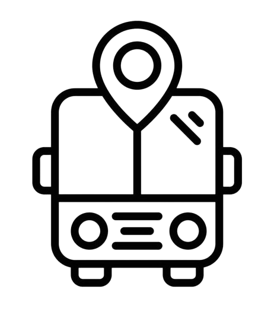

Nossos Serviços
O CheckBus é uma plataforma projetada para fornecer informações sobre os horários de entrada e saída de ônibus, além de registrar reclamações relacionadas ao serviço de fretado da Unidade Fabril de Imperatriz, no Maranhão. Apreciamos sua visita e compreensão, pois estamos sujeitos a mudanças e bugs. Explore nossos serviços e compartilhe suas experiências conosco.

Sistema de Visualização de Rotas e Horários
Obtenha informações detalhadas sobre as rotas disponíveis, horários de partida e chegada, e acompanhe possíveis alterações.
Sistema de Reclamação
Registre suas reclamações relacionadas aos ônibus de entrada e saída, como atrasos, falta de conforto, problemas com o ar condicionado, entre outros.